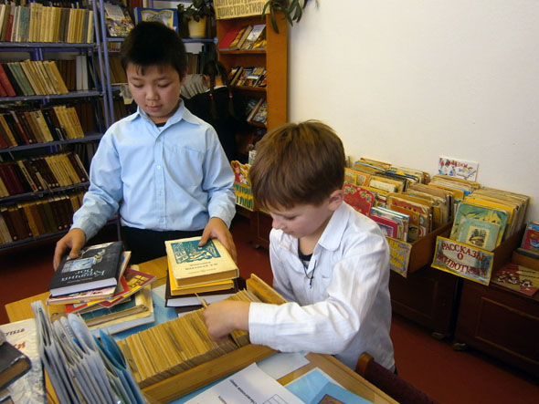
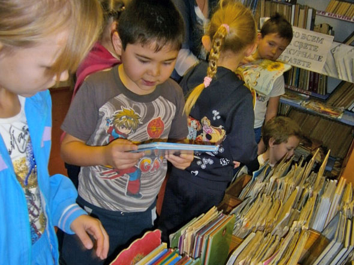
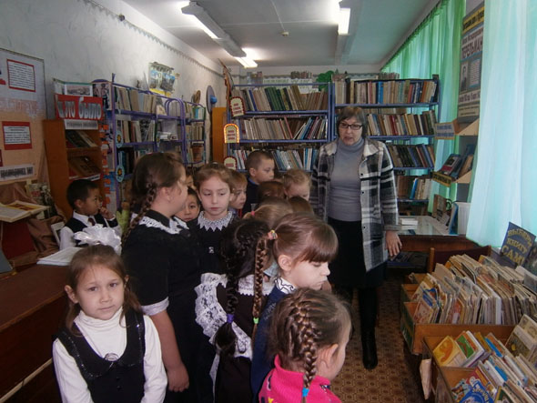

О нас

Я, Попова Любовь Леонидовна, библиотекарь в Средней Школе села "Богдановское" Челябинской области.
В нашем селе проживает около 1 000 человек и располагается оно вдали от крупных городов. В центре села находится школа, в которой учатся дети из Богдановки и других ближайших поселений - Грязнушинское, Каменка, Первомайское, Красногвардейское.

В отдаленных селах Российской Федерации единственным оплотом культурной детской жизни выступает школа. Только в школе сельские дети помимо образовательной деятельности проводят культурный досуг, посещают кружки дополнительного образования, читают книги.

Наша библиотека располагается на территории школы и помимо обеспечения учебной деятельности учебниками она всегда выполняла просветительскую деятельность, занималась воспитанием и развитием любви к чтению у всех наших учеников и жителей села.

Последние 10 лет школьные библиотеки обеспечиваются из бюджета РФ только учебниками и рабочими тетрадями и единственный способ появления книг в библиотеке это пожертвования.
Сейчас детская книга для села жизненно необходима и мы очень нуждаемся в вашей помощи.

Как нам помочь книгой

Библиотеке вы можете помочь одним из следующих способов: